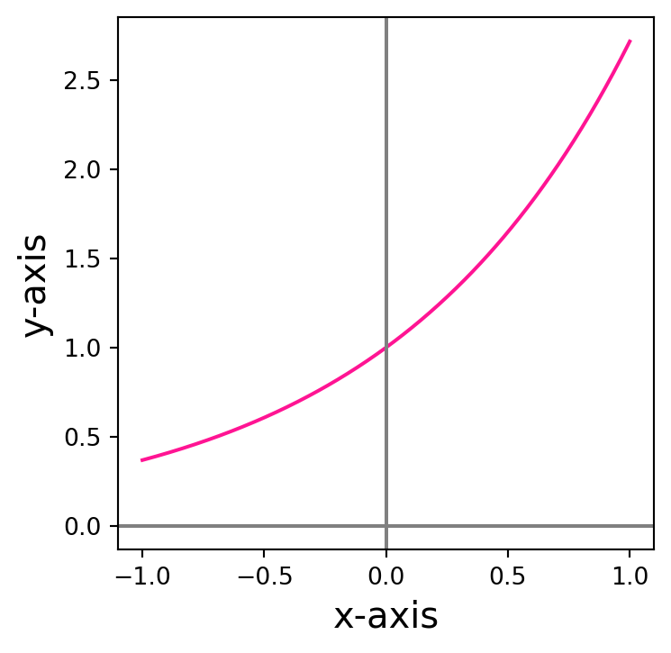
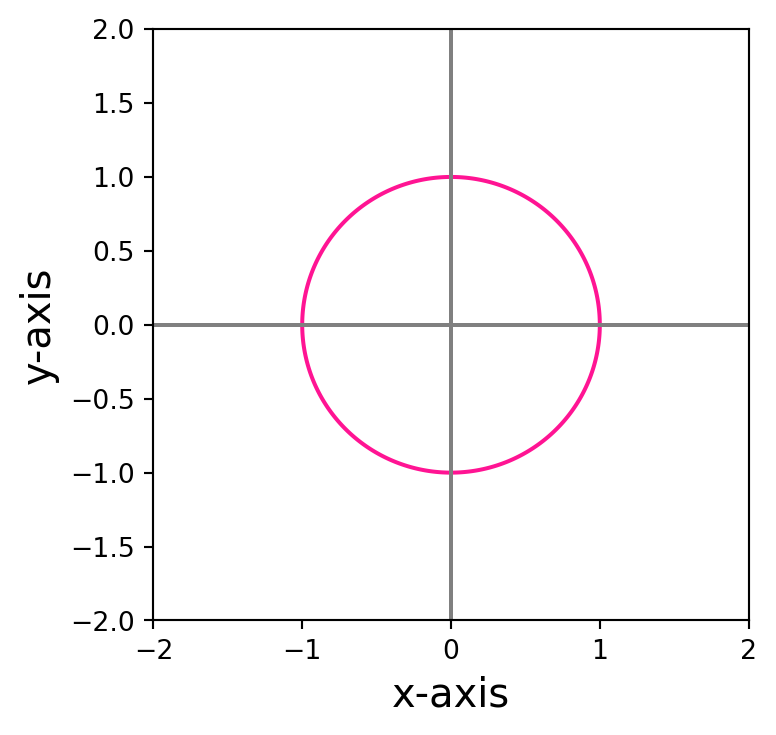
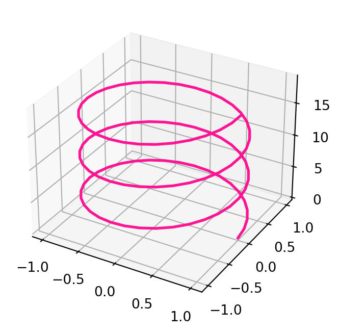
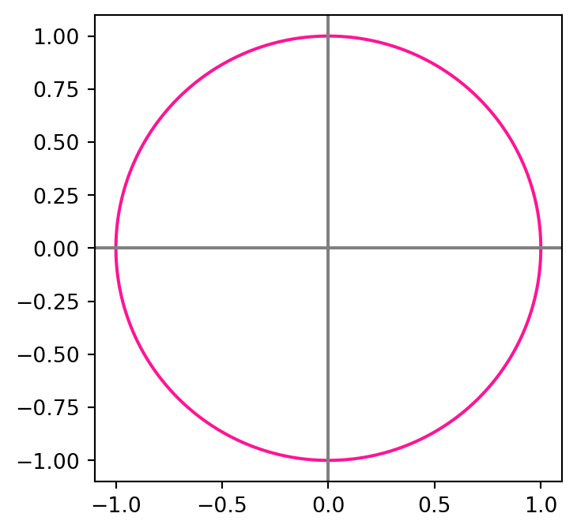
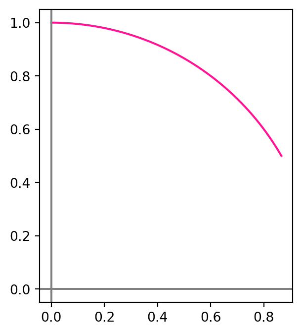

1 Curves
We all have in mind examples of curves. These are, intuitively speaking, 1D objects in the 2D or 3D space. For example in two dimensions one could think of a straight line, a hyperbole or a circle. These can be all described by an equation in the \(x\) and \(y\) coordinates: respectively \[ y = 2x + 1\,, \quad y = e^x \,, \quad x^2 + y^2 = 1 \,. \]


Goal
The aim of this course is to study curves by differentiating them.
Question
In what sense do we differentiate the above curves?
It is clear that we need a way to mathematically describe the curves. One way of doing it is by means of Cartesian equations. This means that the curve is described as the set of points \((x,y) \in \mathbb{R}^2\) where the equation \[ f(x,y) = c \,, \] is satisfied, where \[ f : \mathbb{R}^2 \to \mathbb{R}\,. \] is some given function, and \[ c \in \mathbb{R} \] some given value. In other words, the curve is identified with the subset of \(\mathbb{R}^2\) given by \[ C = \{ (x,y) \in \mathbb{R}^2 \, \colon \, f(x,y)=c \} \,. \] For example, in the case of the straight line, we would have \[ f(x,y) = y - 2x \,, \quad c = 1 \,. \] while for the circle \[ f(x,y) = x^2 + y^2 \,\,, c = 1 \,. \] But what about for example a helix in 3 dimensions? It would be more difficult to find an equation of the form \[ f(x,y,z) = 0 \] to describe such object.

Problem
We need a unified way to describe curves.
1.1 Parametrized curves
Rather than Cartesian equations, a more useful way of thinking about curves is viewing them as the path traced out by a moving point. If \(\gamma(t)\) represents the position a point in \(\mathbb{R}^n\) at time \(t\), the whole curve can be identified by the function \[ \gamma \ \colon \mathbb{R}\to \mathbb{R}^n \,, \,\,\, \gamma = \gamma(t) \,. \]
This motivates the following definition of parametrized curve, which will be our main definition of curve.
Definition 1: Parametrized curve
A parametrized curve in \(\mathbb{R}^n\) is a function \[
\gamma \ \colon (a,b) \to \mathbb{R}^n \,.
\]
where
\[ - \infty \leq a < b \leq \infty \,. \]
A few remarks:
- The symbol \((a,b)\) denotes an open interval \[ (a,b) = \{ t \in \mathbb{R}\ \colon \ a < t < b \}\,. \]
- The requirement that \[ -\infty \leq a < b \leq \infty \] means that the interval \((a,b)\) is possibly unbounded.
- For each \(t \in (a,b)\) the quantity \(\gamma(t)\) is a vector in \(\mathbb{R}^n\).
- The components of \(\gamma(t)\) are denoted by \[ \gamma(t) = ( \gamma_1(t), \ldots, \gamma_n(t) ) \,, \] where the components are functions \[ \gamma_i \ \colon (a,b) \to \mathbb{R}\,, \] for all \(i = 1, \ldots, n\).
1.2 Parametrizing cartesian curves
At the start we said that examples of curves in \(\mathbb{R}^2\) were the straight line, the hyperbole and the circle, with equations \[ y = 2x + 1\,, \quad y = e^x \,, \quad x^2 + y^2 = 1 \,. \] We saw that these can be represented by Cartesian equations \[ f(x,y) = c \] for some function \(f \ \colon \mathbb{R}^2 \to \mathbb{R}\) and value \(c \in \mathbb{R}\). Curves that can be represented in this way are called level curves. Let us give a precise definition.
Definition 2: Level curve
A level curve in \(\mathbb{R}^n\) is a set \(C \subset \mathbb{R}^n\) which can be described as \[
C= \{ (x_1,\ldots,x_n) \in \mathbb{R}^n \ \colon \ f(x_1,\ldots,x_n) = c \}
\] for some given function \[
f \ \colon \mathbb{R}^n \to \mathbb{R}
\] and value \[
c \in \mathbb{R}\,.
\]
We now want to represent level curves by means of parametrizations.
Definition 3
Suppose given a level curve \(C \subset \mathbb{R}^n\). We say that a curve \[
\gamma\ \colon (a,b) \to \mathbb{R}^n
\] parametrizes \(C\) if \[
C = \{ (\gamma_1(t), \ldots, \gamma_n(t) ) \ \colon \ t \in (a,b) \} \,.
\]
Question
Can we represent the level curves we saw above by means of a parametrization \(\gamma\)?
The answer is YES, as shown in the following examples.
Example 4: Parametrizing the straight line
The straight line \[
y = 2x + 1
\]
is a level curve with \[ C = \{ (x,y) \in \mathbb{R}^2 \ \colon \ f(x,y) = c \} \,, \] where \[ f(x,y) := y -2x \,, \quad c :=1 \,. \]
How do we represent \(C\) as a parametrized curve \(\gamma\)? We know that the curve is 2D, therefore we need to find a function \[ \gamma \ \colon (a,b) \to \mathbb{R}^2 \] with componenets \[ \gamma(t) = (\gamma_1(t),\gamma_2(t)) \, . \] The curve \(\gamma\) needs to be chosen so that it parametrizes the set \(C\), in the sense that \[ C = \{ (\gamma_1(t), \gamma_2(t)) \ \colon \ t \in (a,b) \} \,. \tag{1.1}\] Thus we need to have \[ (x,y) = (\gamma_1,\gamma_2) \,. \tag{1.2}\] How do we define such \(\gamma\)? Note that the points \((x,y)\) in \(C\) satisfy \[ (x,y) \in C \iff y = 2x +1 \,. \] Therefore, using (1.2), we have that \[ \gamma_1 = x \,, \quad \gamma_2 = y = 2x + 1 \] from which we deduce that \(\gamma\) must satisfy \[ \gamma_2(t) = 2 \gamma_1(t) + 1 \tag{1.3}\] for all \(t \in (a,b)\). We can then choose \[ \gamma_1(t) := t \,, \] and from (1.3) we deduce that \[ \gamma_2 (t) = 2 t + 1 \,. \] This choice of \(\gamma\) works: \[\begin{align} C & = \{ (x,2x+1) \ \colon \ x \in \mathbb{R}\} \\ & = \{ (t,2t+1) \ \colon \ - \infty < t < \infty \} \\ & = \{ (\gamma_1(t),\gamma_2(t)) \ \colon \ - \infty < t < \infty \} \,, \end{align}\] where in the second line we just swapped the symbol \(x\) with the symbol \(t\). In this case we have to choose the time interval as \[ (a,b) = (-\infty,\infty) \,. \] In this way \(\gamma\) satisfies (1.1) and we have successfully parametrized the straight line \(C\).
Remark 5: Parametrization is not unique
Let us consider again the straight line \[
C = \{ (x,y) \in \mathbb{R}^2 \ \colon \ 2x+1 = y \} \,.
\] We saw that \(\gamma\colon (-\infty,\infty) \to \mathbb{R}^2\) defined by \[
\gamma(t):=(t,2t+1)
\] is a parametrization of \(C\). But of course any \(\gamma\) satisfying \[
\gamma_2(t) = 2 \gamma_1(t) + 1
\] would yield a parametrization of \(C\). For example one could choose \[
\gamma_1 (t) = 2t \,, \quad \gamma_2(t) = 2 \gamma_1(t) + 1 = 4t + 1 \,.
\] In general, any time rescaling would work: the curve \(\gamma\) defined by \[
\gamma_1 (t) = nt \,, \quad \gamma_2(t) = 2 \gamma_1(t) + 1 = 2nt + 1
\] parametrizes \(C\) for all \(n \in \mathbb{N}\). Hence there are infinitely many parametrizations of \(C\).
Example 6: Parametrizing the circle
The circle \(C\) is described by all the points \((x,y) \in \mathbb{R}^2\) such that \[
x^2 + y^2 = 1\,.
\] Therefore if we want to find a curve \[
\gamma= (\gamma_1,\gamma_2)
\] which parametrizes \(C\), this has to satisfy \[
\gamma_1 (t)^2 + \gamma_2(t)^2 = 1
\tag{1.4}\] for all \(t \in (a,b)\).
How to find such curve? We could proceed as in the previous example, and set \[
\gamma_1(t):=t \,.
\] Then (1.4) implies \[
\gamma_2 (t) = \sqrt{1-t^2}\,,
\] from which we also deduce that \[
- 1 \leq t \leq 1
\] are the only admissible values of \(t\). However this curve does not represent the full circle \(C\), but only the upper half, as seen in the plot below.
Simlarly, another solution to (1.4) would be \(\gamma\) with \[ \gamma_1(t)=t \,, \quad \gamma_2 (t) = - \sqrt{1-t^2}\,, \] for \(t \in [-1,1]\). However this choice does not parametrize the full circle \(C\) either, but only the bottom half, as seen in the plot below.
How to represent the whole circle? Recall the trigonometric identity \[ \cos(t)^2 + \sin(t)^2 = 1 \] for all \(t \in \mathbb{R}\). This suggests to choose \(\gamma\) as \[ \gamma_1(t):=\cos(t)\,, \quad \gamma_2(t):=\sin(t) \] for \(t \in [0,2\pi)\). This way \(\gamma\) satisfies (1.4), and actually parametrizes \(C\), as shown below.
Note the following:
- If we had chosen \(t \in [0,4\pi]\) then \(\gamma\) would have covered \(C\) twice.
- If we had chosen \(t \in [0,\pi]\), then \(\gamma\) would have covered the upper semi-circle
- If we had chosen \(t \in [\pi,2\pi]\), then \(\gamma\) would have covered the lower semi-circle
- Similarly, we can choose \(t \in [\pi/6, \pi /2]\) to cover just a portion of \(C\), as shown below.




Finally we are also able to give a mathematical description of the 3D Helix.
Example 7: Parametrizing the helix
The Helix plotted above can be parametrized by \[
\gamma\ \colon (-\infty,\infty) \to \mathbb{R}^3
\] defined by \[
\gamma_1(t) = \cos(t)\,, \,\,
\gamma_2(t) = \sin(t)\,, \,\,
\gamma_3(t) = t \,.
\] The above equations are in line with our intuition: the helix can be drawn by tracing a circle while at the same time lifting the pencil.